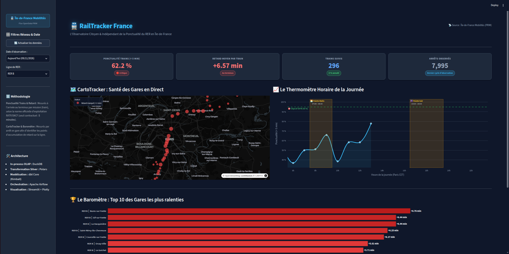

RailTrack — Transit Lakehouse & Analytics
[GitHub ↗]
Le constat
& Pourquoi je l'ai fait :
L'ensemble des 5 lignes du RER francilien (A, B, C, D et E) concentre plus de 3,4 millions de trajets par jour. Les statistiques officielles mensuelles agrègent les indicateurs et masquent la ponctualité réelle arrêt par arrêt. J'ai conçu cette plateforme pour capter les flux temps réel complexes SIRI-Lite / PRIM d'IDFM et modéliser l'effet domino de la propagation des retards à chaque quai.
Architecture & Réalisations techniques :
- Architecture Lakehouse Médaillon : Ingestion des
flux temps réel IDFM (SIRI-Lite) avec découplage strict : validation du contrat de
données en < 2 ms via
Pydantic(Control Plane) et aplatissement vectorisé C++ direct en Parquet ZSTD viaDuckDBetPolars(Data Plane). - Modélisation dimensionnelle dbt (Kimball) :
Schéma en étoile complet (
fact_train_punctualityentourée de dimensions conformes) et déduplication temporelle SQL au dernier état connu pour modéliser le parcours complet de chaque mission. - Orchestration Airflow & Compaction nocturne : Pipeline déclenché toutes les 15 min sous Docker avec DAG de compaction nocturne quotidienne (02:00 UTC) résolvant le Small Files Problem (réduction 84:1 en Parquet ZSTD, zéro amplification d'écriture).
- Quality Gate & Dashboard analytique : Suite
complète d'assertions dbt (
schema.yml), typage strict (mypy,ruff,pytest) et restitution décisionnelle interactive sousStreamlit.

Cliquer pour agrandir
Python
DuckDB
Polars
dbt (Kimball)
Apache Airflow
Streamlit
Docker